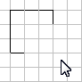
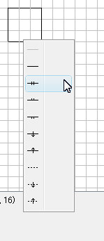
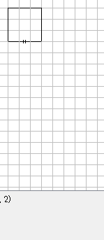
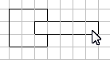
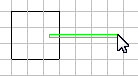
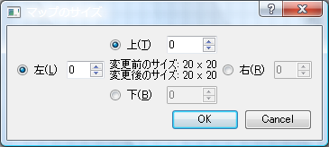
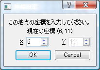

Pydunヘルプ
Pydunは3DダンジョンRPG用のマッピングツールです。
連絡先
不具合、ご要望などございましたら、以下までご連絡ください。
url: http://sourceforge.jp/projects/pydun/
email: hrwatahiki at gmail.com
インストール
インストール作業は不要です。アンインストール時はフォルダーごと削除してください。(レジストリーは使用していません)
使い方
[Pydun.exe]をダブルクリックすればプログラムが起動します。関連付けを設定してあれば、保存したファイルをダブルクリックしてそのファイルを開けます。(設定していない場合は、保存したファイルをダブルクリックすると、開くプログラムを選択するダイアログが表示されますので、そこで[Pydun.exe]を選択してください。)
ドラッグすると壁を描画できます。
 | → |  |
右クリックからのドラッグで壁を削除できます。
 | → |  |
背景色も同様です。
 | → |  |
壁をクリックすると直接修正できます。
|  | → |  |
四角の中央をクリックすると詳細を入力できます。
 | → |  |
「ボックス形式」と「足跡形式」の違い。
| ボックス形式: |  | → |  |
| 足跡形式: |  | → |  |
マップのサイズ
メニューの[編集]-[マップのサイズ]から、マップのサイズを変更できます。プラスの数値を入力すると、その方向にスペースを追加します。マイナスの数値を入力すると、その方向のスペースを削除します。マップのサイズに制限はありませんが、一度に拡張できるのは+100までです。
座標設定
メニューの[編集]-[座標設定]から、座標の基準点を変更できます。[座標設定]を選択後、メイン画面の基準点をクリックすると、座標入力ダイアログが出てきますので、座標を入力してください。座標は+999から-999まで入力できます。
[送る]への登録
(関連付けを設定してあれば、保存したファイルをダブルクリックしてそのファイルを開けます。使い方を参照してください。)
*.pydunを右クリックして、[送る]-[Pydun.exe]で起動直後にそのファイルを開くことができます。これを行うためには、あらかじめ、ユーザーフォルダーの中にある[SendTo]フォルダーに[Pydun.exe]のショートカットをコピーする必要があります。[SendTo]フォルダーの位置はOSによって違います。
- XPならば、[C:\Documents and Settings\ユーザー名\SendTo]
- Vista, 7, 8ならば、[C:\Users\ユーザー名\AppData\Roaming\Microsoft\Windows\SendTo]
仕様詳細
- 保存ファイルはテキスト形式(yaml)です。メモ帳などのエディタで開くことができます。
- [元に戻す]は127回まで戻ることができます。
変更来歴
| バージョン | 公開日 | 内容 |
|---|---|---|
| 1.0.5 | 2013-05-24 | ファイル処理を修正。 |
| 1.0.4 | 2013-05-15 | 描画方法を見直し。保存したファイルから直接開けるように修正。最新版チェック機能追加。 |
| 1.0.3 | 2013-04-28 | いわゆる[送る]に対応。設定保存機能を追加。 |
| 1.0.2 | 2013-04-13 | 詳細に漢字があると保存に失敗するのを修正。メニュー表記の見直し。ヘルプの追記。 |
| 1.0.1 | 2013-03-21 | ウィンドウタイトルが更新されない不具合の修正。 |
| 1.0.0 | 2013-03-20 | 新規公開。 |